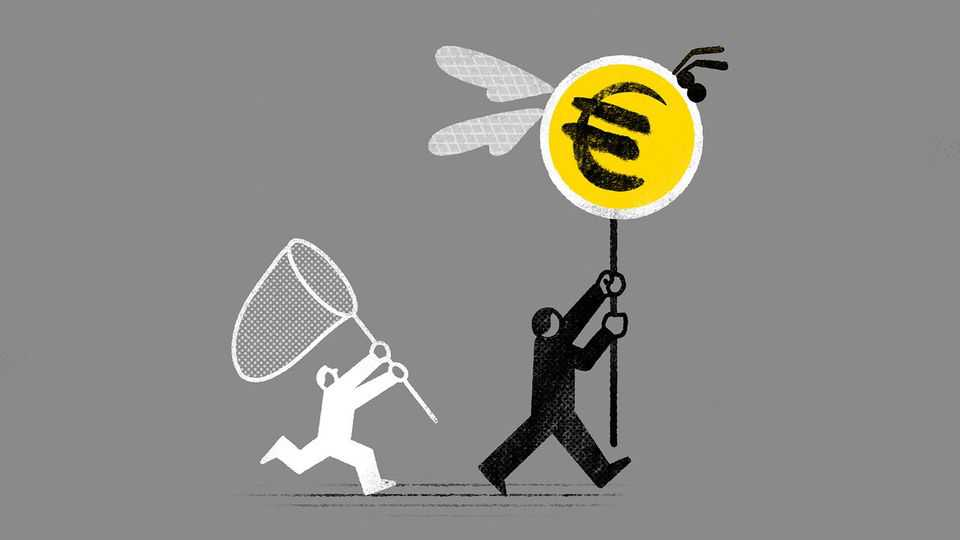

How to lose money betting against Europe
In a sovereign-debt crisis, even understanding politics may not be enough

Oct 15th 2026
“THE EURO is like a bumblebee,” noted Mario Draghi, former boss of the European Central Bank (ECB), in 2012. “This is a mystery of nature because it shouldn’t fly but instead it does.” Mr Draghi was a better central banker than entomologist. In the same speech, he vowed to do “whatever it takes to preserve the euro”, a pledge that ended the acute phase of the crisis that had roiled the currency union for three years.
The recent sell-off of French government debt, amid protests in the streets and a yawning hole in the budget, might bring back unhappy memories of the tumult. In early October the yield on ten-year bonds was 1.6 percentage points above that on equivalent German bunds, the widest gap since 2011. When borrowing costs in the euro zone drift apart, it is a reminder of the currency union’s aerodynamic deficiencies.
Europe does not yet face the kind of existential distress of a decade and a half ago. But that near-death experience holds lessons for speculators thinking of betting against wobbly European bonds. Many traders learned the hard way that politics can win out over economics. And even understanding the politics is no guarantee of making money.
Some investors were poorly positioned for the political turning-point in the euro crisis. Days before Mr Draghi’s pivotal speech John Paulson, an American investment titan, was telling clients that he saw a 50% chance that the currency union would shatter. When it did not, his main funds booked double-digit losses that year.
Mr Paulson was not alone. At the time, more than 70% of investors expected an economy to leave the euro zone within 12 months, according to Sentix, a data provider. In the event, troubled countries such as Greece, Ireland and Portugal were willing to bear enormous economic pain to remain in the club, while the rest bent its rules to help them. Fund managers who were right about the economics badly misjudged the politics.
Yet political foresight may not have been enough. A piece of trading folklore states that some traders lose money even with knowledge of tomorrow’s news. In 2023 Victor Haghani and James White of Elm Wealth, an advisory firm, showed there was truth to the adage. They offered 118 graduate students in finance and business the opportunity to make bets on American Treasuries and the stock market with access to the front page of the next day’s Wall Street Journal. The players guessed which way assets would move only 52% of the time.
Some investors who were convinced early in the last crisis that the euro zone would keep bumbling along had their own wings clipped before the bloc landed on a fix. Jon Corzine, a former governor of New Jersey, led MF Global into bankruptcy, largely owing to the broker’s leveraged bets on European sovereign debt. In a congressional grilling after the firm’s collapse, Mr Corzine said he had thought Europe “would take much more forceful steps to avoid bankruptcy or insolvency”. His logic was eventually shown to be sound: none of the bonds ever defaulted. But the intervening decline in their value as collateral was enough to send MF Global to the wall.
Today’s French sell-off has so far been orderly, in contrast to the chaos of 2009-12. It has not infected the country’s euro-zone neighbours too much. And nothing suggests the return of the “doom loop”, where governments borrowed to bail out failing banks, and banks failed because that borrowing depressed the value of the government bonds they held in spades. Share prices of European banks are down in the past month but up by 10-15% this year, after hitting two-decade highs this summer.
France, though, may yet test this orderliness to destruction. In 2027 the presidential race could end in a contest between Marine Le Pen, a populist right-winger who promises, unaffordably, to stop the pension age from rising, and Jean-Luc Mélenchon, a leftist who has threatened a selective debt default.
In such circumstances a wise investor may wish to emulate Alan Howard, co-founder of Brevan Howard, a big hedge fund. In December 2011 Mr Howard explained that betting on the outcome of the euro-zone crisis was a gamble he was “particularly careful to avoid”. Its resolution would ultimately be “a political decision” that his firm had “no real edge in understanding”, he noted. Mr Draghi was wrong about bumblebees: scientists do understand their flight. The euro zone’s volatile trajectory makes for a much harder study. ■